Galería de amigurumis inspirados en diferentes tipos de series y películas: desde caricaturas infantiles hasta películas de terror; pasando por animes y los clásicos animados, entre muchas más. ¿Puedes encontrar tu serie favorita?
 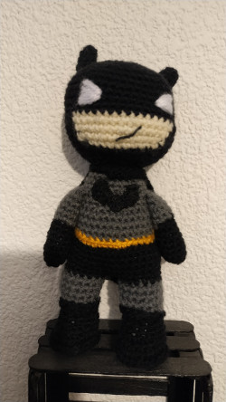
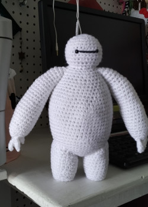
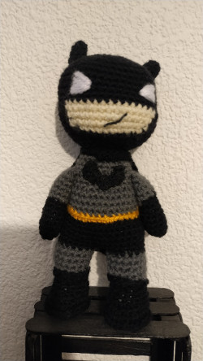
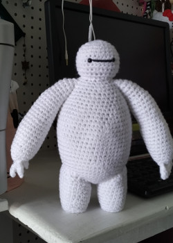

 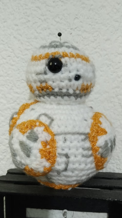
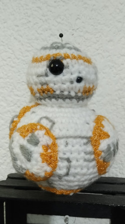


 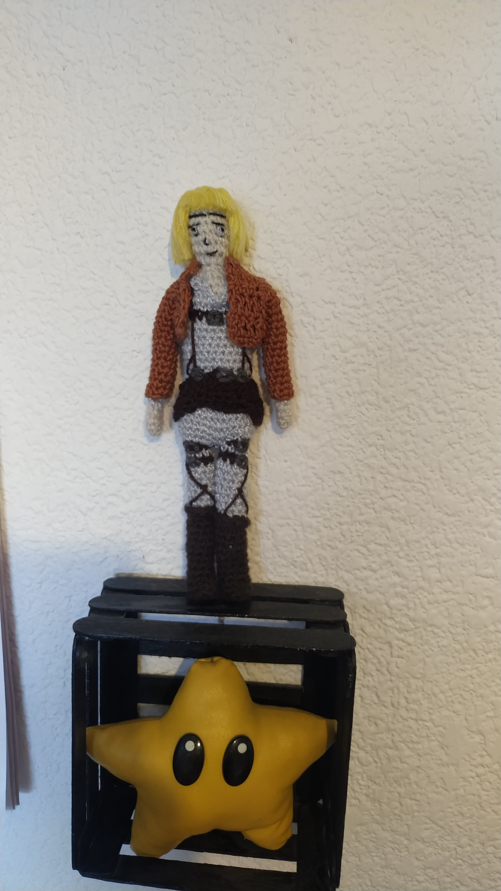
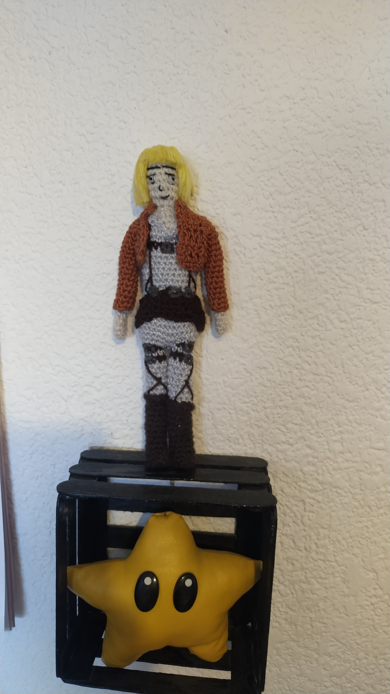


 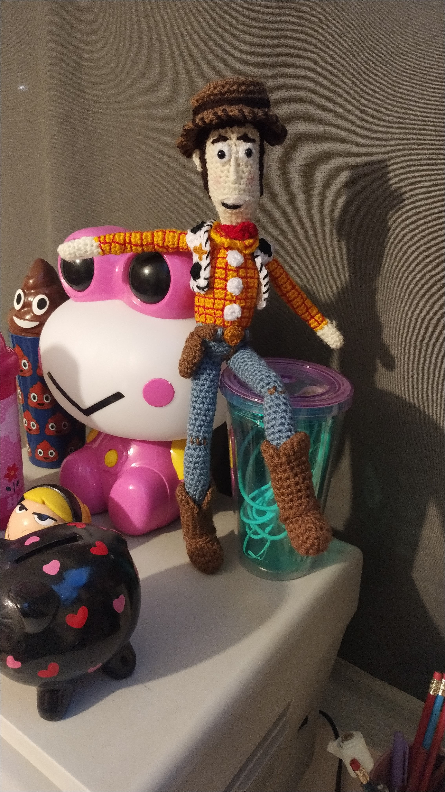
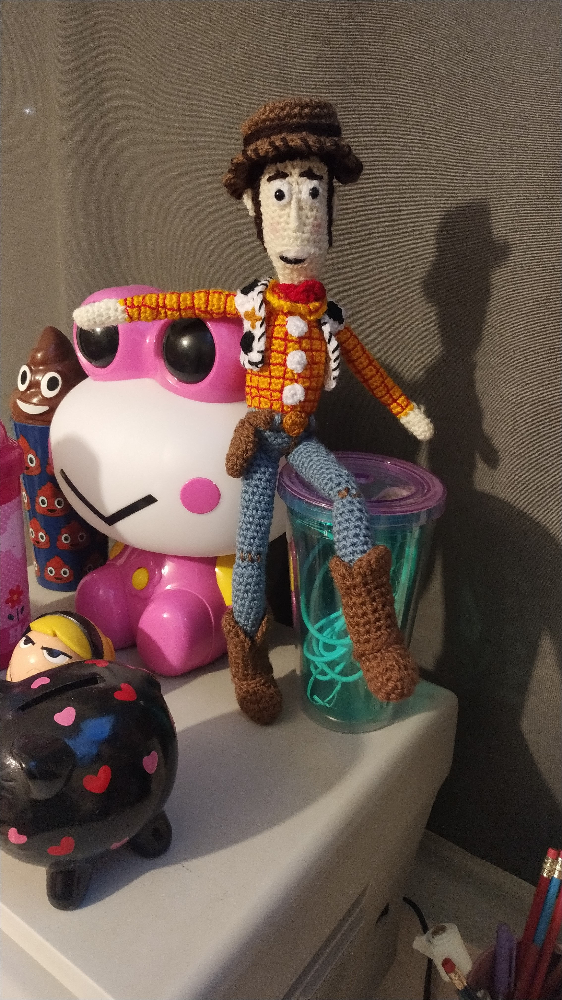


 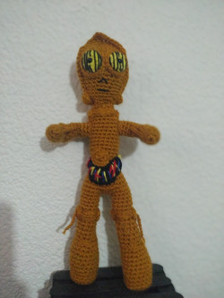
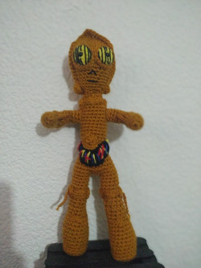
 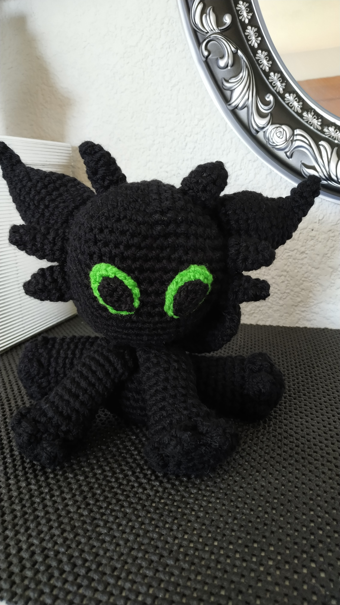
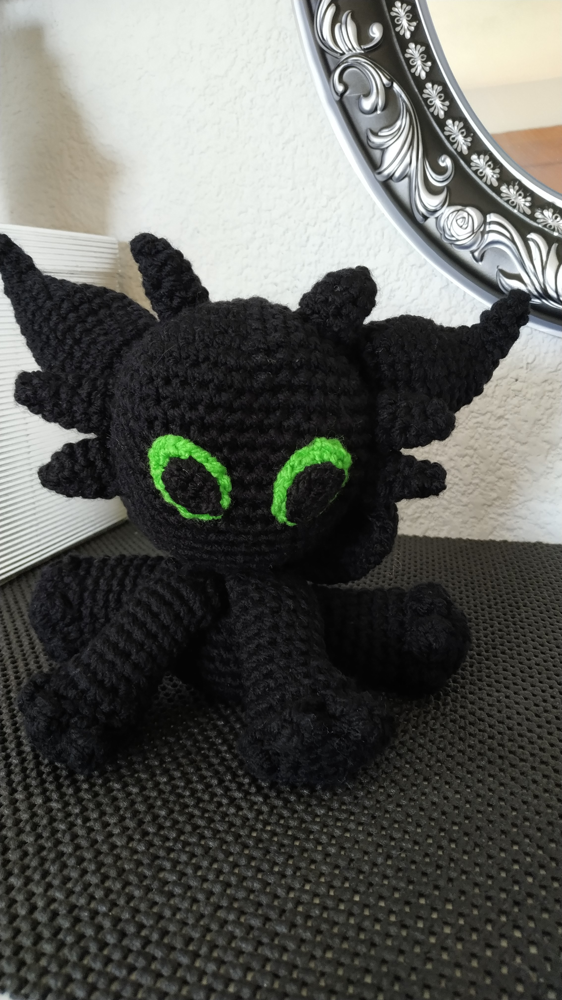


 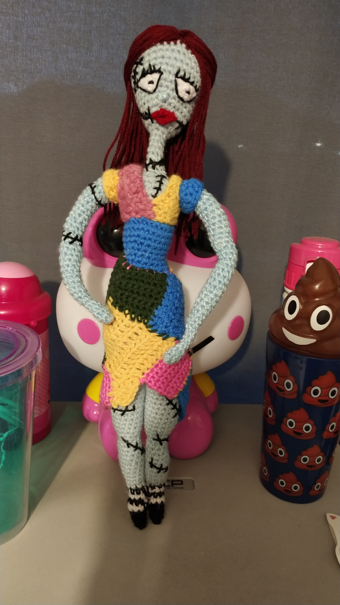
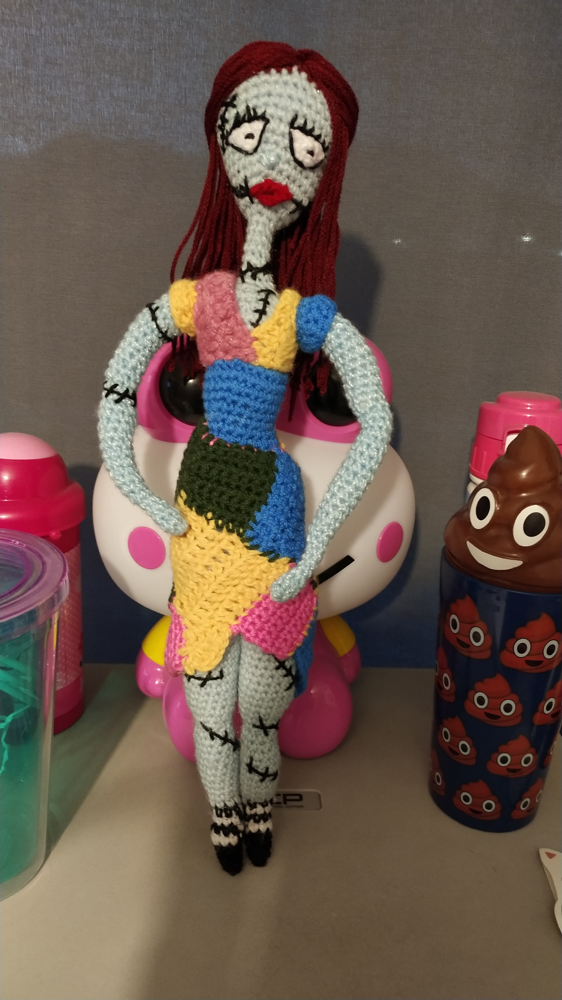


 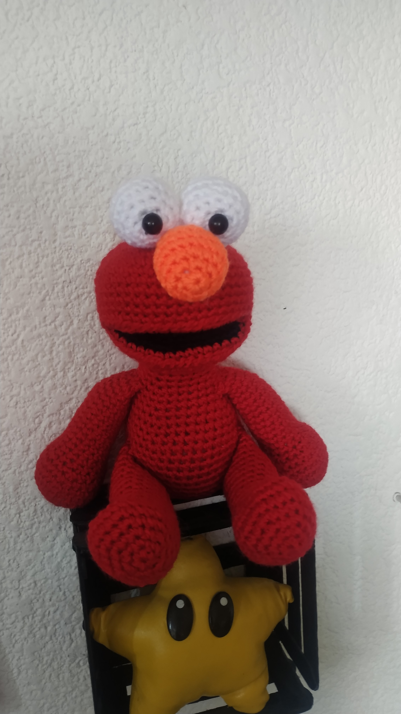
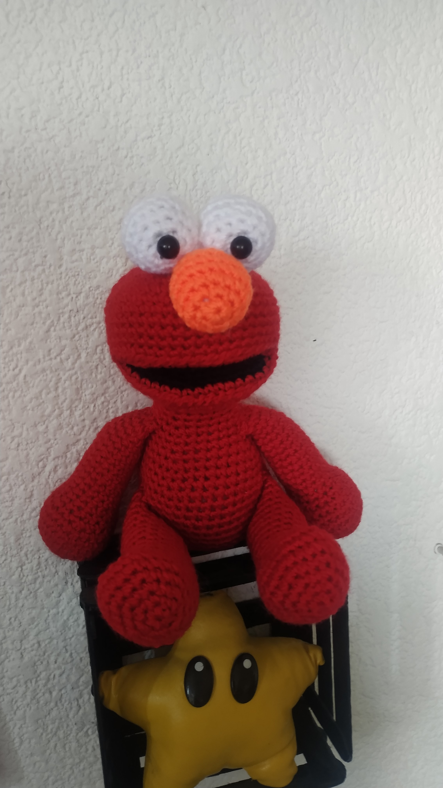


 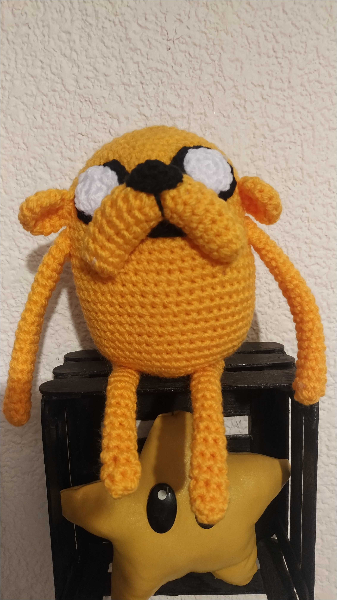
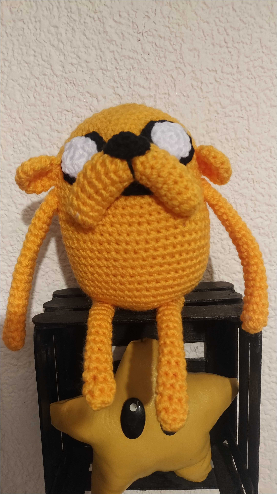

 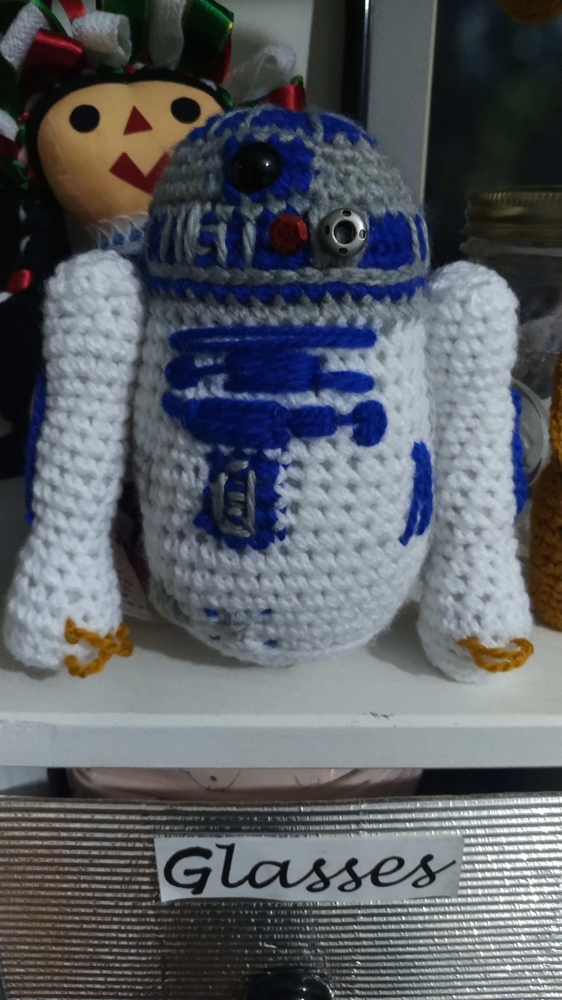
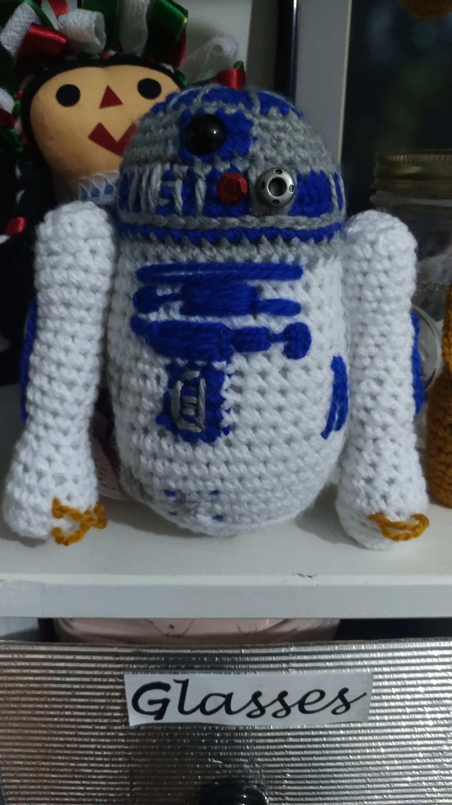


 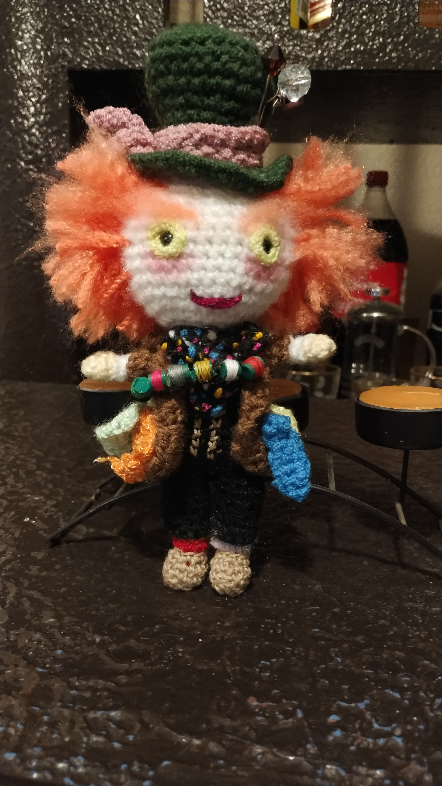
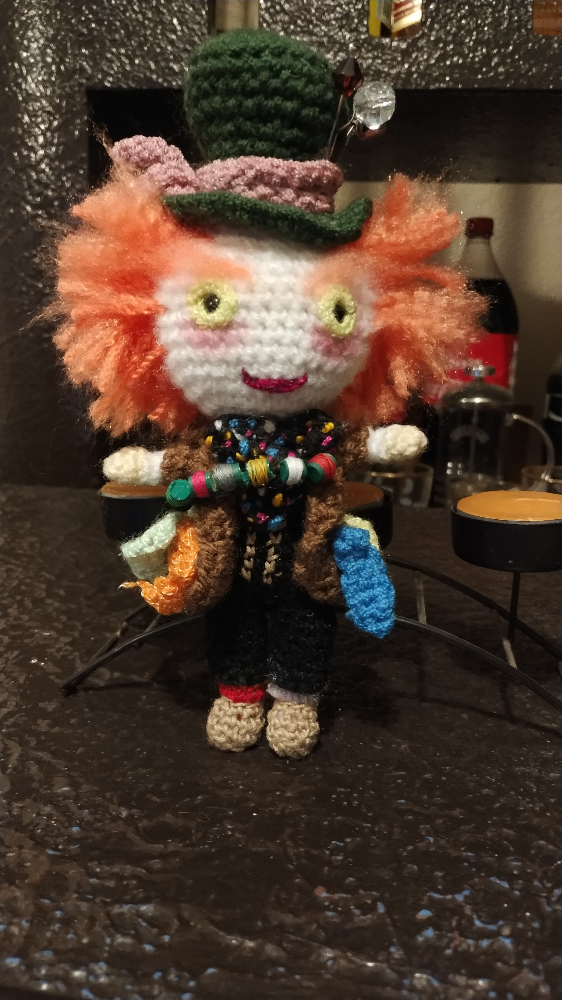